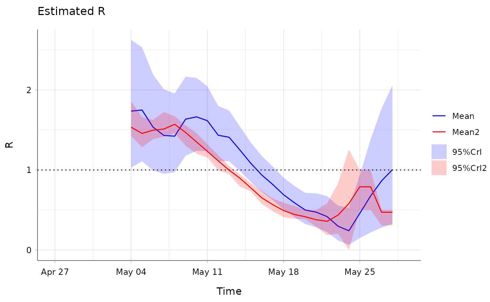

This wrapper has been created so that several estimate_R objects can
be plotted at the same time.
estimate_R_plots(..., legend = FALSE)Arguments
- ...
Arguments of
plot.estimate_R, but in addition, parameterxcan be a objects of classestimate_R(obtained as outputs of functionsestimate_Rorwallinga_teunis. Ifxis a list, andwhat='R'orwhat='all', all estimates of R are plotted on a single graph. This will only work if all theestimate_Robjects in the list were computed using the sameconfig$t_startandconfig$t_end- legend
A boolean (TRUE by default) governing the presence / absence of legends on the plots
Value
a plot (if what = "incid", "R", or "SI") or a
grob object (if what = "all").
See also
Examples
## load data on pandemic flu in a school in 2009
data("Flu2009")
#### COMPARE THE INSTANTANEOUS AND CASE REPRODUCTION NUMBERS ####
## estimate the instantaneous reproduction number
## (method "non_parametric_si")
R_instantaneous <- estimate_R(Flu2009$incidence,
method = "non_parametric_si",
config = list(t_start = seq(2, 26),
t_end = seq(8, 32),
si_distr = Flu2009$si_distr
)
)
## estimate the case reproduction number
R_case <- wallinga_teunis(Flu2009$incidence,
method = "non_parametric_si",
config = list(t_start = seq(2, 26),
t_end = seq(8, 32),
si_distr = Flu2009$si_distr
)
)
#> Warning: setting config$n_sim to 10 as config$n_sim was not specified.
## visualise R estimates on the same plot
estimate_R_plots(list(R_instantaneous, R_case), what = "R",
options_R = list(col = c("blue", "red")), legend = TRUE)

#### COMPARE THE INSTANTANEOUS R ON SLIDING WEEKLY OR BIWEEKLY WINDOWS ####
R_weekly <- estimate_R(Flu2009$incidence,
method = "non_parametric_si",
config = list(t_start = seq(9, 26),
t_end = seq(15, 32),
si_distr = Flu2009$si_distr
)
)
R_biweekly <- estimate_R(Flu2009$incidence,
method = "non_parametric_si",
config = list(t_start = seq(2, 19),
t_end = seq(15, 32),
si_distr = Flu2009$si_distr
)
)
## visualise R estimates on the same plot
estimate_R_plots(list(R_weekly, R_biweekly), what = "R",
options_R = list(col = c("blue", "red")), legend = TRUE)